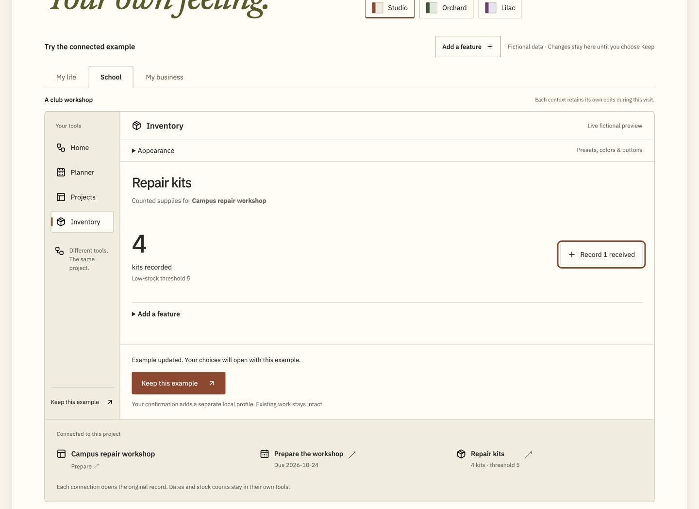

Dylan
Becchetti
Engineering software.
Mechanical design.
My work spans Python research systems, connected web applications and mechanical design. At Cardinal Glass, the production tracker I built became part of my coworkers’ daily debrief.
Lehigh B.S. expected January 2027

Motion controls
Three summer internships · 2023–2025
Cardinal Glass
I built a production tracker that engineers and operators used in daily R&D shift debriefs. For weekly reporting, I connected quality, production, yield and work-order data in an Excel/VBA Scorecard.
Weekly operations scorecard · Fictional records
Weekly Scorecard
Pick a reporting week, change the downtime on a shift, or trace a number back to its source. The examples use the rules I worked out for the weekly Scorecard.
Turn date-coded IDs into a weekly defect report
The source quality log held more than 10,000 unit records. Each ID contained its production date, so a selected week could determine which records to count.
- Inspected units
- 42
- Failed units
- 12
- Primary particle failures
- 6
| Defect | Count | Share of failures |
|---|---|---|
| Particle — Surface | 6 | 50.0% |
| Coating — Pinholes | 3 | 25.0% |
| Handling — Scratch | 3 | 25.0% |
Particle failures: 14.3% of inspected units, or 50.0% of failed units. The denominator changes the meaning.
Follow one source record into the report
250605001 means June 5, 2025 · unit 001. This fictional failed unit has “Particle — Surface” as its primary defect and “Particle — Edge” as a second defect. The retained report counts the primary defect once. An earlier experiment counted all three defect fields and grouped families; that was a different report version.
The defect report ranked the primary defect counts from largest to smallest. These 84 example units are fictional; the 10,000+ figure describes the original source log.
Production time
If recorded downtime already includes the gap before the first production event, subtracting all of it from the observed span understates line time. The documented rule allocates downtime to a late start, then an early stop, and subtracts what remains.
- 06:00 → 17:30Target shift
- 08:00 → 17:15Actual span: 555 minutes
- 120 minutesLate-start gap
- 15 minutesEarly stop: below the 30-minute threshold
- Allocated to late start
- 120 min
- Remaining downtime
- 30 min
- Reported line time
- 8.75 hr
555 minutes − 30 minutes = 525 minutes of reported line time.
Fictional shift. Gaps qualify only when greater than 30 minutes; the full qualifying gap can receive downtime. Allocation is capped by recorded downtime, and line time cannot go below zero. The example applies the documented reporting rule.
Connect the dates without rebuilding everyone's worksheets
| Source | Reporting problem | What I worked on |
|---|---|---|
| Yield workbook | One week can contain several observations. | Match all dates within the week and average their percentages. |
| End-of-day report | Weekly blocks extend across hundreds of columns. | Navigate to the selected week in place, preserving formulas and comments. |
| Work-order log | Due dates and status highlights change during the week. | Classify delivery risk for the active week while preserving previous weeks. |
Work through a yield example
Fictional readings: June 5: 88% · June 8: 94% · June 11: 91%. All three dates belong to June 5–11, so the reported mean is 91.0%. Matching the week to just one source row would miss two observations. This is an average of recorded percentages; it is not a unit-weighted yield.
See a delivery-rule edge case
A fictional order due two days ago enters the Late bucket if unhighlighted. Under the later documented rule, a highlighted order is excluded from the first three risk buckets. An order due more than 28 days away enters On time regardless of highlighting. “On time” is a planning category, not evidence of shipment.
Three working selectors navigated EOD weeks, scorecard weeks and defect-report periods. Scheduled refresh was unreliable, so a saved week reflects its last successful update.
This reconstructs the weekly system. I built a separate tracker for the daily R&D debrief. Open the full reconstruction and source records →
The source reports already held formulas and comments people needed. When copying a selected week risked breaking those connections, I changed the design to take people straight to that week in the original report. I also automated weekly counts from a log of more than 10,000 units.
- 2023
Engineering
Rotated through maintenance, quality and R&D. Inspected units, analyzed data in Minitab, drafted equipment layouts in AutoCAD and contributed to design failure mode reviews.
- 2024
Continuous improvement
Wrote illustrated build instructions for customer samples, planned spare-parts organization and signage across 14 warehouse locations, and measured cleanroom airflow with a capture hood and micromanometer.
- 2025
Continuous improvement
Built Excel/VBA reporting for the R&D line and worked with engineers and operators to bring daily production data into the shift debrief.


The figures use fictional records. The interactive demo reconstructs the weekly reporting system, which is documented in more detail than the daily debrief tracker.
Lehigh capstone · Spring and fall 2026
Kinetic Wilbur
My team is building an 80-inch kinetic sculpture to hang above a classroom at Wilbur Powerhouse. A planetary gear train makes six signs spin and orbit, so people can watch the mechanism work and see the kind of projects that come out of Lehigh’s Design Labs. I did much of the mechanical design and built all the OpenSCAD models.


I took the parametric models from small proof-of-concept assemblies to the full-scale design. When roller tests raised noise concerns, I modeled fixed casters and a wider laminated ring, preserved the inner gear profile, and updated the CNC profiles and motor position. I worked with my team and sponsor to turn the design into parts we could make at Lehigh.
Sculpture components
Explore the full assembly, the parts that carry it, and what changed when we started making it at full scale.

Planetary gear assembly
The motor turns an external pinion, which drives the outer ring. The six planet gears mesh between that ring and a fixed sun gear. Each planet spins its sign while the carrier moves all six around the center.
We kept the gearing visible from below. The hanging figures and lettering give visitors a way into the motion and tie the display back to Wilbur and Lehigh.

Carrier and supports
I replaced the plywood carrier concept with six paired steel-tube arms welded to a central hub. A thrust bearing supports the rotating carrier at the center. Cable stays run from the carrier’s mast to the ends of the arms. The arm ends roll on the ring, and four fixed support stations carry the ring from below.
In the team’s analysis of an earlier carrier, adding stays reduced predicted deflection at the planet support from 0.94 mm to 0.41 mm and shifted more load to the center bearing. The November wheel mounts and installed assembly still need their own checks.
Ring gear and drive
We tested steel and nylon ball transfers with our sponsor and found both louder than we wanted. I modeled fixed casters and widened the solid plywood band they roll on, keeping the inner gear profile so it would still mesh with the planets.
I modeled the ring as four identical plywood half-pieces. Two halves make each layer; rotating the top layer 90 degrees staggers the seams while both tooth patterns still line up. One CNC profile can produce all four pieces. The wider ring moved the motor mount 70 mm farther out and changed the external drive reduction to 10:1.

Unit One
We CNC-cut the plywood gear, welded the steel sleeve and plates, then fitted the gear into the first assembly. The sleeve measured about 1.02 inches across. We sanded the first bore to fit and allowed more clearance for later cuts.
The first unit gave the team a full-scale reference for making the other five, including the bearing and shaft fit.
Design and fabrication
In spring we interviewed students, faculty and tour guides. They wanted something visitors could understand quickly, with motion that would draw people in without disrupting the space. We turned those conversations into requirements for safe placement, noise, maintenance, cost and fabrication with the tools at Lehigh. We compared concepts and took apart a toy carousel and a planetary gear system before committing to our own mechanism.
My first OpenSCAD prototype had a base and a wave cam that moved the figures up and down. For the second I removed the base and vertical motion, moved the support overhead and kept the spin and orbit. We printed small assemblies to work out fit and motion before moving to full-scale plywood and steel in the fall.
At full scale we tracked weight and cost alongside fit, noise and shop capacity. We modeled ten years of costs, including electricity, maintenance and replacement parts. The wider ring exceeded the original six-foot target, so we brought the installation envelope back to the sponsor. Final weight depends on the revised parts and installation hardware.
Weight through the design revisions
An earlier material study estimated about 365 lb for the sculpture before mounting and drive hardware. The fall review listed 280 lb for a lighter iteration. These are different design revisions; neither is a measured weight of the current installed sculpture.
In fabrication: the team has assembled Unit One and cut gears. The revised ring, supports and installation still need fit checks and review.
Fall design review · First full-scale gear unit assembled. Remaining carrier, ring and installation work ahead.
Midas Futures
I’m building Midas to test whether a futures strategy can still work after trading costs, prop-firm account rules and repeated evaluations are included. What began as an equities scheduler has become a Python research and demo-trading system.
I built modular strategies, batch campaigns, component ablations, Monte Carlo studies and account simulations, with cloud workers that can resume interrupted research. Strategies can share risk limits while the model follows fees, resets and payouts. A separate Practice system handles demo orders and reconciliation.

Replay and forward evaluation
Replay and forward evaluation once disagreed on when a bar was complete and which price an exit could use. I put those decisions into a shared state machine. A retained check matched 228 session decisions and 225 modeled trade lifecycles against a frozen reference.
I also built a Mac queue that ran 288 variants at two cost settings in one observed campaign. It reused a saved result for a duplicate and rejected invalid work before execution. In the later cloud importer, interruption tests check that a retry can finish publishing a request without adding the same job twice. Failed or unverifiable claimed runs hold later work for reconciliation, even after restart.
How the research pipeline is organized
Define the experiment
Freeze the strategy, code, data, time window and costs so each result belongs to a specific run.
Replay and compare
Use shared decision rules and a simulated clock. Run variants in batches and resume from verified checkpoints.
Simulate the account
Put strategies under shared risk limits. Track evaluations, resets, fees and payouts across the observation window.
Review before Practice
Compare with retained controls. Practice has its own authorization, execution ledger and reconciliation.
Historical account simulation · November 10, 2026
Account experiment
The first three views follow a completed cloud experiment testing one signal against earlier configurations. The final view shows recovery of a separate, later experiment.
- 52 requested16 lacked a complete historical window.
- 18 of 36 savedStopped at the planned checkpoint.
- 36 completedResumed automatically from that checkpoint.
- 252 comparedAdded 36 new results and kept 216 earlier rows intact.
Decision: keep it in research. All 36 cases were still in evaluation at cutoff. None had passed evaluation or recorded a modeled payout.
120-session windows
Each cost setting contains 10 cases. The observed median after modeled costs was the same under both settings.
| Cost setting | Cases | Median cash |
|---|---|---|
| Baseline | 10 | −$546 |
| Higher costs | 10 | −$546 |
180-session windows
Each cost setting contains eight cases. The higher-cost comparison was the one specified in advance for the decision. It failed the cash and payout gates.
| Cost setting | Cases | Median cash |
|---|---|---|
| Baseline | 8 | −$780 |
| Higher costs | 8 | −$780 |
Recovering a later cloud experiment · November 11
A separate 72-case strategy comparison stopped after an infrastructure failure. I built recovery checks that kept completed results, ran only the missing cases and refused to mix them with a different experiment.
The first six results are preserved. The remaining 66 cases still need to run.
Better cash alone was not enough. The added signal improved median modeled cash in both primary comparisons, but funded failure episodes rose from one to two in each. Both comparisons failed the acceptance rules set before the run and stayed in research.
Results and experiment limits
Of the 72 added cases, 40 had negative modeled net cash and 41 had at least one modeled payout; those groups overlap. All 72 were still censored for survival at the observation cutoff, so their eventual survival was unknown. The historical windows overlap and use familiar data. These are simulations, not received cash or live returns.
This newer experiment and its recovery code are retained branch work, separate from the November 10 experiment above and the default branch. The failed attempt remains part of the run history.
The windows can overlap. The case counts describe their named experiments, and the cash figures are simulated.
Historical backtest and comparison runs
Historical backtest
+$7,586
Modeled net P&L across 365 signals and 374 dates, June 2024–December 2025. The comparison used one micro Nasdaq futures contract, a fixed 58-minute hold and $7.24 in modeled round-trip costs. The strategy’s modeled max drawdown was $2,089.
| Same dates and cost model | Net P&L |
|---|---|
| Strategy direction | +$7,586 |
| Always long | −$2,311 |
| Always short | −$2,974 |
Cumulative modeled net P&L by month
- Strategy direction
- Always long
- Always short

Scanned Leverage and Optimized Production
Python/Luau · Market research and prototype production
I’m developing a system for deciding what to prototype, then building variations from shared parts. Roblox is the first market. Python tools organize market observations and manually annotated gameplay; a configurable producer assembles original Roblox places with shared Luau game rules.
Two arenas. Shared game logic.
Signal Break · Original two-player prototype


Rendered from the exported Roblox place geometry, not a gameplay capture. The configurations move cover, pickups, the warden start and an exit; server, client and game-state logic stay shared.
I regenerated both places from their committed configurations and matched their saved bytes. Configuration checks reject invalid settings and blocked declared routes.
Follow a tested round
Tested in both configurations
- Pick upAt three seconds the runner recovers the jammer. Trying to use it back at the start is refused.
- Open the gateAt four seconds the runner uses the jammer at the gate. The shortcut opens for five seconds, and the warden can see the runner’s position.
- Take the exitAt six seconds the runner reaches the open exit and wins. A separate test tries the shortcut after it closes and gets refused.
- Swap rolesWhen both players ready up again, the other player becomes the runner.
The automated test exercises the game rules with declared positions and times. Multiplayer playtesting is a separate step.
There is also a test for a player leaving mid-round. The state clears the carrier, gate and location reveal without awarding a win, advances the round version, and refuses delayed actions from the old round. A replacement pair starts with fresh state.
This follows the pinned pure-state tests. No multiplayer session was executed for this example.
The research tools organize rankings, descriptions and manually annotated gameplay by source and game. I compare how games handle actions, state changes and rewards, then decide what to explore in an original design. On the production side, Signal Break generates two arenas from shared game logic. Moving cover, pickups and player starts means changing the configuration rather than rebuilding the game.
Scan the market
Join market observations to the right game and keep their original source.
Break down play
Turn annotated gameplay into actions, state changes and rewards. Leave gaps visible.
Build original variants
Set the rules and geometry in a configuration. Assemble a Roblox place using shared code.
Check the result
Reject blocked declared routes and invalid settings. Rebuild from the same inputs and compare the output.
Concept review
I held a separate collector concept at storyboard review because the proposed second trip did not demonstrate a different risk or useful payoff. A static companion pose and captions were not proof that the mechanic worked. The production system still needs the research and product review to decide what is worth building next.
Operalith
I’m building Operalith so someone can choose the tools they need, make the workspace their own, and keep their work connected. A customer enquiry can become a project. The next task and the supplies for it can point back to that same project.

I built the React/Next.js interface and shared record model, along with a catalogue of compatible tools and features. Planner, Projects and Inventory support dates, checklists and project links. Equipment Loans records checkouts and returns. Customers & Enquiries keeps the customer, site and request together as an enquiry turns into work.
I treated an enquiry becoming a project as one connected change. The project keeps its original enquiry, customer and site, and the enquiry points back to the project. A second conversion is refused because the work already exists. Undo checks both sides: if either record has changed, the app asks for the later change to be undone first.
People can add compatible features and change the appearance while keeping the work they already entered. The public example saves in the browser. A separately invited solo pilot supports account saves.
Open the public workspace →Fictional records · Current local build
Example workspace
I ran this example through Operalith’s record engine. Review the linked work, receive three pads, then undo the stock change. The walkthrough replays the saved results.
Customers & Enquiries
Repair the display stand
- Customer
- Northline Workshop
- Site
- Studio display area
- Status
- Converted
View the conversion
I marked the enquiry Ready, then created its linked project. Operalith stored reciprocal references to the original enquiry and project. I then linked a preparation task and the supplies to that project.
The follow-up “Prepare the stand repair” and its November 12 date stayed on the enquiry.
Projects
Display stand repair
- Stage
- To do
- Source enquiry
- Repair the display stand
- Linked records
- 1 task · 2 supplies
The same project remains linked throughout the stock change and undo.
Planner
Count supplies before repair
- Status
- To do
- Due
- November 12, 2026
- Count protective pads
- Inspect the stand fixings
Linked to Display stand repair.
Inventory
Supplies for this project
| Supply | Recorded | Threshold | Check |
|---|---|---|---|
| Protective pads | 2 pieces | 4 | 2 pieces below threshold |
| Mounting brackets | 8 pieces | 4 | Above threshold |
1 linked supply needs a stock check.
The threshold is a manually chosen check level. The example records a receipt with a reason and lets you reverse that change.
Equipment Loans also has a cordless drill checked out to the fictional operator, due November 12. It keeps its own custody log in the workspace.


Tool setup and saved work
I made tool definitions and feature compatibility explicit. Adding project links requires a Projects tool. Adding a checklist keeps the existing task and adds the new fields around it. The same state and validation functions support the tools, their connected views, and the account version.
I built stock adjustments with recorded reasons and targeted undo. For account saves, PostgreSQL checks ownership and the edited version, then stores a receipt for the request. An older edit cannot overwrite newer work, and a repeated request can return its earlier result.
Operalith is still a product I’m developing. The public demo is browser-local and the account pilot is for invited solo use with fictional work.
Formsby
I started Formsby to connect a request on one website with a useful offer, person or resource elsewhere. I designed a shared discovery and matching workflow so each new category would not need a separate system. Housing became the first focused prototype: a request goes in, and a private shortlist comes back with source links and reasons for each match.
Housing prototype · Sample request
Housing search example
A fictional request and the actual fallback output, together. I ran the March prototype’s matcher on three invented listings; the source-handling views trace its application code.
“A one-bedroom in Bethlehem, under $1,500. Cats allowed.”
- LocationBethlehem
- Budget$1,500 maximum
- Bedrooms1
- Must-have“cats allowed”
This example starts with the request already in structured form and runs the March build’s fallback scoring functions.
What did the matcher find?
| Candidate evidence | Score | Matcher’s explanation |
|---|---|---|
| 1 bedroom apartment Bethlehem · $1,450 “Cats allowed.” | 78 / 100 | Location aligned; bed count may align; mentions cats allowed. |
| Studio apartment Bethlehem · $1,300 “Pet policy not stated.” | 70 / 100 | Location aligned; bed count may align. |
| Garden apartment Easton · $950 “Pet policy not stated.” | 45 / 100 | “Matched on housing subtype and location.” This is the fallback’s generic text, despite no matching location. |
Why did a studio receive a bedroom bonus?
The fallback starts at 45, adds 15 for a location mention, 10 for the requested bedroom digit anywhere in the text, and 8 per must-have phrase. The “1” in “$1,300” triggers the bedroom bonus. It does not enforce the budget or verify availability.
The processor’s code keeps candidates scoring at least 50 and sorts them highest first. Applying that rule to the sample leaves the one-bedroom and the studio.
The next quality gate: structured bedroom and budget checks, evidence-specific explanations, and independent availability verification. These scores describe a prototype fallback, not measured recommendation accuracy.
Search history and access
Suppose two sources return the same listing URL and a third fails. Here is how the application code handles that case.
- Keep one candidateThe processor keeps the first candidate for each canonical URL.
- Mark partial resultsA connector failure records PARTIAL; saved matches receive NEEDS_REVIEW.
- Read the latest runThe detail endpoint selects the newest run and queries only its evaluations.
- Check the ownerThe request query includes the signed-in user ID. A missing or other user’s request returns 404.
What if nothing comes back?
Zero results with no connector errors can still be READY. Connector errors produce PARTIAL even with zero results. An exception caught by the processor’s outer handler records FAILED. These states distinguish an empty search from incomplete source coverage and an aborted run.
New candidates start with a CURRENT status. Confirming whether a listing is still available is a separate check. This example traces the owner and latest-run filters in the source code.
Project history
| Stage | Evidence and boundary |
|---|---|
| Original Python prototype | City/category lookups, persistent lead IDs and parent-linked match IDs. Historical selector debugging recovered five full-text candidates. File-based payment flags simulated unlocking saved text. |
| Later housing application | Source contains authenticated requests, run records, source adapters, URL deduplication, evaluations and private latest-run results. The ranking panel runs through one part of that build. |
| Original design, still broader than this build | Prepare a match packet before payment and deliver that exact packet by persistent ID. The later housing code instead dispatches processing after payment when billing is enabled. Completed paid delivery, more categories and private conversations remain future work. |
The scoring example uses fictional listings and the fallback from the March 15, 2026 source snapshot (d61dc649).
I started thinking about Formsby on breaks and lunches at Cardinal, then spent months working through the product and its Python prototype. I built city and category lookups, persistent lead IDs and match IDs linked to their original request. I designed discovery, interpretation, matching and communication as separate stages so category-specific rules could change without duplicating the whole workflow. When a source returned HTML but no records, I inspected its structure, corrected outdated selectors and recovered five candidates with full text and source URLs.
The harder problem was deciding what counted as a useful match. A directory link or a plausible description wasn’t enough. I wanted a specific option with enough source information for someone to act on. That requirement led me toward fetching and evaluating individual offers, keeping the original request attached, and recording why a candidate was selected.
I built the housing prototype to keep useful results when one source fails. It searches sources in parallel, merges duplicate URLs and records which connectors failed. Each shortlist belongs to a search run, so a retry does not mix its match evaluations with an earlier run. The signed-in user sees the latest run, with partial results identified as partial. I also added background dispatch and a Stripe callback that links payment to the request before processing.
Early delivery design. One question was what someone would actually receive after paying. I designed the offer around a saved match packet tied to a persistent ID: checkout would unlock those same details without running the search again. The Python prototype included file-based unlock logic. The later housing app instead starts processing after payment. Completing the original delivery flow, expanding categories and adding private conversations remain part of the broader vision.
Housing prototype · Last code update March 2026 · Python, Next.js, PostgreSQL, Prisma, Inngest and Stripe
About me
I’m finishing mechanical engineering at Lehigh. I also spent three summers at Cardinal Glass, where I got to build tools for people I worked with every day.
The Scorecard and production tracker are work I’m proud of because they helped people I knew. Formsby started as an idea during breaks and lunches there. I’ve spent about a year directing and building Midas, and I’m building Operalith into a product of its own. These are projects I keep coming back to because I want them to work.
Résumé & contact
I’m finishing my Mechanical Engineering B.S. and Materials Science and Engineering minor at Lehigh. I expect to complete coursework in December 2026 and receive my degree in January 2027. I’m interested in full-time, U.S. remote engineering work.